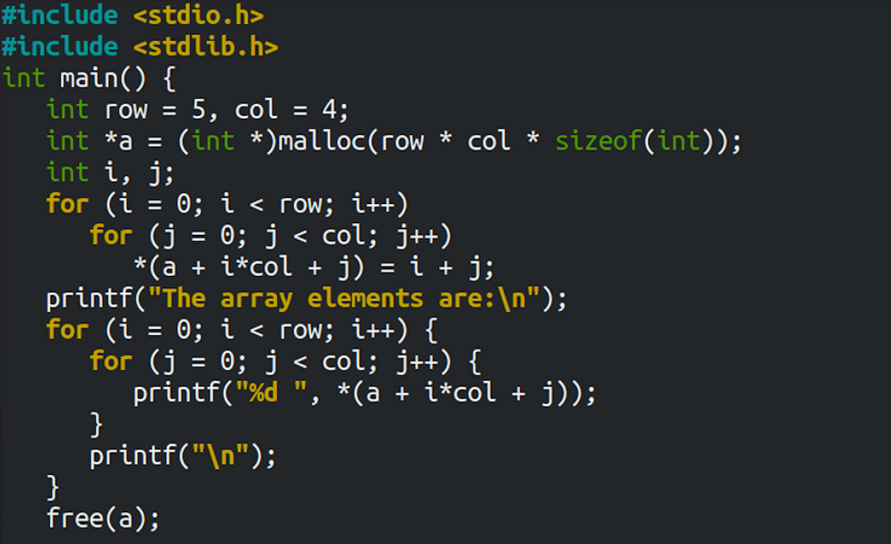

C programming language
How is it like to learn C after coming from Python and the low-level functionality

Initially, C seemed daunting, cluttered with excessive curly brackets. After my first lecture, my suspicions seemed confirmed; even basic tasks proved challenging. Working with strings was a nightmare, input handling unclear, and security risks abundant. In contrast, Python's simplicity and clarity were refreshing. However, my perspective would soon shift.
As I delved into understanding low-level computer functionalities, the quirks of C programming gradually made more sense. Overcoming challenges like segmentation faults, my grasp of the language improved. With each hurdle, I grew more drawn to C's power and flexibility. Exploring memory allocation and data structures became fascinating, revealing C's low-level control and precision. This journey transformed me from a novice to someone who relishes C's challenges, sculpting intricate solutions and understanding computing's essence.
Learning C has significantly enhanced my comprehension of programming. For instance, prior to delving into C, my usage of lists and dictionaries in Python was habitual, yet I never truly grasped their inner workings. I never paused to consider how items were dynamically added to lists or the underlying mechanisms involved. However, through the process of crafting linked lists in C from scratch, I gained invaluable insights.
Creating linked lists in C entailed constructing functions for adding and removing items, all while mindful of runtime considerations. This exercise not only deepened my understanding of data structures but also honed my ability to optimize code for efficiency. By immersing myself in the intricacies of C programming, I've developed a more profound appreciation for the fundamental principles that underpin software development.
Lately, I've found myself leaning towards C over Python. It's not solely about speed; rather, programming in C simply resonates more with me. Despite acknowledging that opting for C in contemporary contexts might not always be the most practical choice, I'm drawn to its inherent logic and structure. Admittedly, C still harbors numerous idiosyncrasies that can impede productivity. Thus, I view it as more suited for personal projects and recreational coding pursuits. Nevertheless, I harbor a keen interest in delving deeper into C and exploring other low-level languages in the future. My goal is to unravel their intricacies, foster a deeper understanding, and undertake exciting, high-performance projects. By immersing myself further in C and similar languages, I aim to broaden my skill set, tackle new challenges, and ultimately, craft innovative solutions with speed and efficiency.